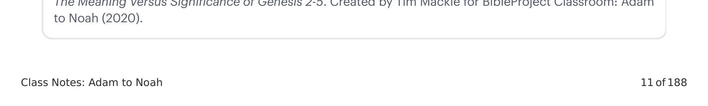

Em nosso cenário cultural moderno, a história de Adão e Eva tem sido levada a falar sobre muitos tópicos que os autores bíblicos não tinham a intenção de abordar. Devemos estar vigilantres para fazer uma distinção entre perguntar o que Gênesis 2-5 significa dentro do contexto do TaNaK versus o que ele significa para outras áreas de interesse. A diferença é de intenção. Os autores bíblicos pretendiam que as histórias abordassem as questões principais em jogo no TaNaK, não nossas preocupações modernas. No entanto, Gênesis 2-5 pode ter significância para como pensamos sobre outros tópicos à luz da perspectiva bíblica, mas não devemos confundir isso com o significado de Gênesis 2-5 em seu contexto nativo.In our modern cultural setting, the Adam and Eve story has been made to speak to many topics that the biblical authors did not mean to address. We must be vigilant to make a distinction between asking what Genesis 2-5 means within the context of the TaNaK versus what it means for other areas of interest. The difference is one of intention. The biblical authors intended for the stories to address the main issues at work in the TaNaK, not our modern concerns. However, Genesis 2-5 may have significance for how we think about other topics in light of the biblical perspective, but we should not mistake this for the meaning of Genesis 2-5 in its native context.

| SignificadoMeaning | SignificânciaSignificance |
|---|---|
| Gênesis 2-5 → TaNaKGenesis 2-5 → TaNaK |
|
Qual é a diferença entre significado e significância quando falamos de estudar a Bíblia?What is the difference between meaning and significance when talking about studying the Bible?